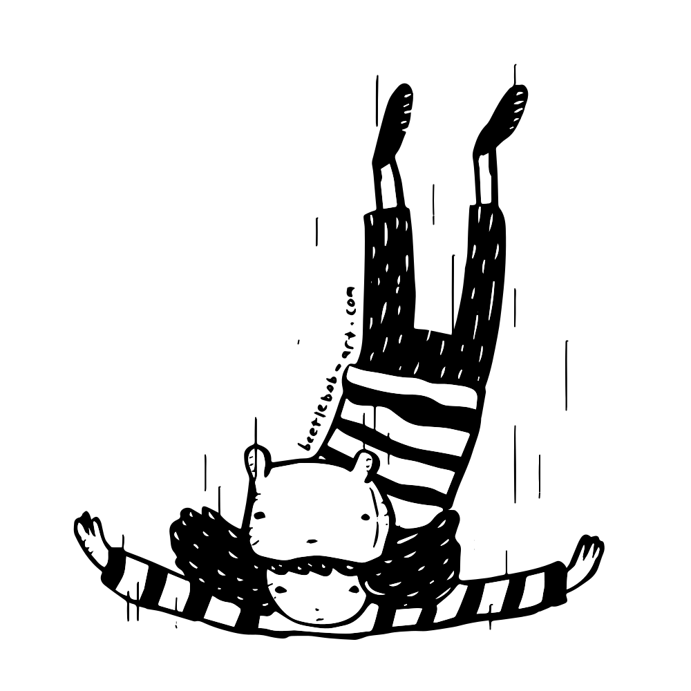

Debbie Wong

Who are you?
In the context of art, I would tell people I go by the name of Beetlebob. It's sort of like the pseudonym that I have created to fit all my work under. As Debbie Wong, I'm just a 20-something person doing a very yuppie job and lot of side work.
I feel like there's a lot of people out who want to make things. I think everybody intrinsically has a feeling like, "I want to contribute and push something out there." I think I'm very lucky in that I've found a platform that I use to express myself. So I figure in my free time, I'm just going to take this and see how far I can push it out.
In terms of that platform, is that drawing?
It's drawing for me. I've never really considered anything else to be a platform to express myself. I actually really love music, I go to shows a lot. And I picked up the ukelele and guitar for a while, but as much as I love that side of the creative outlet, I just don't think anything other than drawing has spoken out to me as this is my creative outlet. So it's always been drawing and illustrating.
How did you start doing that?
I remember growing up and just drawing Pokémon. In a way, art stuck with me. I used to go to the library all the time, and checked out manga because that was one thing that tied it back to Taiwan for me. But at the same time, I was reading manga and using that as a platform to learn English. Manga is a really visual form, so even if I don't completely understand every single dialogue that's happening, the visual gives a lot of context. And it keeps me interested in learning versus if I'm just looking at this wall of English text that means nothing to me and is not really engaging to me.
That just continued on, growing up with Pokémon, coming to the US, and still reading manga and children's book..that was actually another big thing. One of my favorite children's book is The Little Prince. That sort of style really spoke to me. Even through high school, that's been a passion point of mine. It's never been a conscious decision in my mind that I'm going to keep drawing, I was just doing it. It just happened.
When did you move to Chicago from Taiwan?
I was actually born here in Chicago, but my family moved back to Taiwan when I was three months old, so my younger brother and sister were born in Taiwan. We grew up there until I was about 10. Most of my mom's side of the family are still in Taiwan, but my dad's side of the family, a lot of them had moved here. So he's always wanted to move here. I moved here when I was in fourth grade. We moved in with our cousin in Chicago, out by Northeastern University.
How was the transition here?
It was tough--mostly because I didn't speak the language. It's a couple things I'm balancing. I'm the oldest of three kids. One, you're helping out your family with a lot of stuff. My dad was working two jobs so there's a lot of things they have to figure out and would sometimes rely on me to help out with because my English--as bad as it was, was still probably better than them. Also, juggling schoolwork. And also trying to fit into a completely new country.
I would say that it was pretty tricky up through high school. Even then, I would think about "what if I grew up in Taiwan, would that have been so much easier?" Things like that. Wishing back like that.
Have you been back?
Yes, last year I was back there. It was really nice.
How was it back there? When I go back to Taiwan, there's a sense of familiarity and comfort. Do you have a similar experience?
Definitely. I think it's sort of a mixed thing to me. It feels really familiar and I can operate in that world because I speak Chinese and I have family in Taiwan. And if i go back I can probably start a life for me there pretty easily.
It's really familiar, but it's really foreign at the same time. I remember sophomore year of college I went back to Taiwan for three months, the whole summer I was there. The weirdest thing was towards the end of it, I was feeling homesick for America. It's weird because I grew up in Taiwan. I kind of split my life there, I have my family there, I know the culture, I speak the language, but I'm also really out of touch with what the youth culture is there and I don't have a friend group out there--which is a huge piece of your life in the city.
Were your parents the first generation that came here?
Yeah, they were. I think 1.5 would really explain it well. I think I came here when I was old enough to realize there's a whole different life out there, but also have a whole life here in Chicago.
Does trying to figure out this concept of home and identity figure into your art?
I think so. I feel like for a really long time--when I realized there were things I was being drawn to, whether it was musically or something that was visual--I was looking for something that feels very familiar, yet a bit different. That's been sort of the theme. I think that itself really heavily influences my style to try to find something that feels really familiar, and yet at the same time, not be deemed so...for my aesthetic to not be "oh that's very japanese vibes" or anime or manga. That’s a weird balance. I remember a conscious move away from that.
I grew up reading a lot of manga, even in high school when I did a lot of drawing. That was very much my style. It was what I practiced on, so that's what all your stuff sort of looks like. I do remember towards the end of high school and into college, I was really consciously looking for something to balance it out, so it's not so much just a straight copy of manga style. Or taking that familiar style and turning it into something that's my own.
What were some of your favorite manga to read back then?
I really loved Neon Genesis Evangelion. That's a really good one. Fooly Cooly is really interesting to me. At some point, I went from this very otaku--anime everything--to I look at manga and anime as an art form. That's when I started seeking out these more experimental artists within the manga/anime space. Fooly Cooly is really interesting because if you watched the first series, they're really experimental with their storytelling. The style changes a lot even within the series on purpose to throw people off. I've never seen that before Fooly Cooly in any other anime/manga series. That's probably why that was so interesting to me.
It almost looked like they were drawing with their non-dominant hand and it's just like what is happening?
And the scene would change and everybody is South Park-style! Another one I really like is Tekkonkinkreet. I think his name is Taiyō Matsumoto, he draws these graphic and violent images, but there's also this innocence to it, it's a really weird balance he goes for. He's also someone I really look up to. Miyazaki is kind of like a Disney of us.
The manga and things like that influenced my style actively, but the manga that connected with me the most--that I'm just like, this is me--it's Inuyasha. He's half-demon and half-human and I feel like he faces this internal struggle where he doesn't feel like he's full demon and he doesn't feel like he's completely human. For a really long time, that's sort of how I felt, I'm Asian American, but I don't feel fully Asian American. Sometimes I feel more American and sometimes I feel like I'm Asian.
Where does the name Beetlebob come from? What does it mean?
When I was in college, we used to play D&D. Beetlebob was my Dungeons and Dragons name. Within the Harry Potter series, there's another book that JK Rowling published called The Tales of Beedle the Bard. Beedle the Bard, that's where the name sort of came from. The bard is an interesting thing. My ultimate life goal is to be a bard, or to be a children's book writer. That name speaks to me, not only do I want to tell stories visually, but also have written words to go along with it.
Is there a reason children's books gravitated towards you?
I think children's books are interesting in the same way anime and manga are interesting for me. I want to write a children's book that similar to The Little Prince where you can read it when you're younger, and find it a really interesting story, but when you read it later on in life: holy crap, this is what it actually means. In a sense, the same way anime and manga draws me, it's this very seemingly innocent and approachable platform that you're going into: 1. you're entertained by it, 2. it has enough depth that if you want to dig beyond the surface level, there's something there.
When I say children's books I don't mean like, The Cow Goes Moo.
There could be some deep messages there. Goodnight moon, goodnight cow. Read that backwards.
Which comes first, the cow or the moon?
You said that everyone inherently wants to create things, I find that to not be necessarily true.
I think everybody wants to create, but not everybody wants to put in the work.
Everybody wants to express themselves.
Exactly. They want to make something.
The process is different from consuming something.
People get to a certain point, they don't know what the proper outlet is for them, or they don't care enough to put in the work. I think it is a lot of work.
If everybody wants to create, how would you unlock that potential, inspire them?
I think the person has to want it. For me, when I stopped drawing in junior/senior year of college, I felt like there were external expectations that I shouldn't be fucking around anymore and I should be focusing my time on getting a job because that's what society deems me as successful. So I think it's one of those things where people really want it, and I think people need to realize what success means to them. Growing up in AA households, you have parents that have really strong expectations of you already. I think it makes it easy for kids like us who have parents with fairly strong expectations and strong directions of where you should be going in order to be successful.
How did your parents factor into your desire to do art?
It's actually funny, I feel they've flipped-flopped about it. When I was in high school and I was drawing and stuff, they were like, "Oh this is very nice, but you should probably get a real major." So I went into psychology and went into advertising. I went into psychology first so my dad would stop bugging me. I wasn't really feeling it, I ended up switching to advertising because it's creative in some sense. Even that took a bit of time for my parents to accept, that it was a good path. In college, I was still drawing, but they always looked at it as a hobby.Because of that sort of thinking, I thought, I could never do something like this professionally or it's just something I do at night or on weekends.
It wasn't until a year or two after I started my career, I realized I was not very happy with the things I did day-to-day, on a 9-to-5. I would meet people at the agency that were also very creatively-minded. They started to pull me in. There's this guy, his name is Lamar Land. He used to be the creative director at the old agency that I worked at, so he's like this super eccentric guy. He's always working on side projects, he just picks up people like, “you want to do creative work, come with me.” It probably wasn't until that, that I found someone that I was really looking up to and believes in my ability as a creative. He's like,” I've seen your art, it's super awesome, why don't we do more of it, why don't you do commission for me.” I felt like that really kickstarted it for me. I only have one life and most people don't even know what they want to express themselves with. I might as well give it a shot and see where it takes me, and it's been two years since then.
So you're hoping this art is what you can do professionally?
Aside from Beetlebob, I'm also working--me, Lamar, and three other people, we are starting this thing called FRC. It stands for Fucking Random Content. We're trying to be this creative content house. We are pulling people who are in this 9-to-5 but they want to do something more for themselves. We have someone in here that works for an advertising agency, but is also a copywriter, and there's me who also works at an advertising agency, but I'm also an illustrator, someone who's building a website, and a guy who's a sales guy by day, but audio engineer by night. It's a collective of sorts.
We don't do it intentionally, but we have a really diverse crowd of people within FRC. It's a majority minority. There's this one white guy who's our coding guy. That's really interesting because advertising is a really white space. I go to work, and I feel like I'm this black sheep. Being a minority also lends you a different lens that you are seeing and other people may not.
Do you find the art space to be mostly white?
I would say so. Most of the people big in the Chicago art scene. I don't think there's any Asian American artist in Chicago that's really big that I really know of, I think there's a couple that I've seen that kind of make it, and are up and coming, but you see a lot more established AA artist probably more along the West Coast. You have Cartoon Network, the animation world. In terms of racial makeup, mostly white.
I'm curious about the art you do. How would you describe it?
It's very illustration based -- in terms of technical, it's ink on paper with mostly marker and color accents in a sense. I guess the style I would describe my work is cartoon vibes--more whimsical. I think that's the sort of style I have, and again, heavily influenced by what I was consuming growing up.
Are there certain themes you gravitate towards?
I think one of the things I realized recently is that a lot of the things I draw are characters, whether they're human-looking or something completely outside of the human form. A lot of them have a very stoic aesthetic to them. They're not very excited or very sad, they show up and are very singular. They exist on their own but there's nothing threaded through.
That was a big revelation for me. I think the next phase for me--these characters have a stoic moment in time but what else is happening around them--what is the context to which that they exist? I think that's what I want to explore next.
What do you want the people looking at your illustrations to get out of them?
So my process is very laissez faire--I just put pen to paper and draw it out if it looks cool. Because of that, the work comes out and I realize that people project themselves or project whatever they want onto these pieces. It gives people a space to explore themselves even if it's my art. It's really interesting to receive feedback from different people about how different pieces make them feel. Like I drew this monster-looking character that says "Hello good vibes." My good friend bought it and he let me know that the other day he looked at it on his wall and thought "Hell yeah, hello good vibes."
What is your process like when it comes to drawing, do you carry a sketchbook or have set times?
I usually travel around with a backpack, and most of the time I have a sketchbook I carry around constantly. Pens, markers and pencils, that helps me a lot because any downtime I have I can just sit down and start sketching. For the first few years I started working--there's so many meetings where you have excessive status updates--I would doodle in them and I realized I was drawing a lot more because I had my materials with me right there.
I typically do try to allot time for it. 30 minutes to an hour a day to just sit down and draw. I find that really helps me because when you're working 9-5, you're constantly thinking "What do I have to do" but not necessarily letting your mind wander and find inspiration.
I follow a lot of artists on Instagram as well because I think when you're creating it's important for you to continue consuming so that your work doesn't become this singular thing, it draws from different inspiration or work that is completely different from yours. It pushes your work forward.
Are there any artists that are specific inspirations?
David Cho. And you know Hebru Brantley? He's really interesting and I've been to a few of his gallery openings. He's a prominent Chicago artist and at the opening he was talking about his work and how he was doing odd jobs coming out of college, but he never gave up on drawing, it was always something he wanted to do. He had a really interesting evolution where he was drawing Flyboys on the street--and actually the inspiration for it, the yellow goggles were a reference to the tuskegee pilots back in World War II. They were a group of exclusively African American pilots in the Italian military that were fighter pilots. He very much took inspiration from that and incorporated those elements into his work. Growing up, he really loved superheroes but there weren't very many black superheroes so it was really important for him to create this character on the streets that he could see himself in. From that evolution from street art to galleries and selling out solo shows, he's constantly pushing his style.
When I recently saw his show it was a tribute to Andy Warhol and Keith Herring. That style of painting is so drastically different from his previous street art, so I think that's really important for artists to keep pushing themselves. It's a really interesting process to see where he came from and what he could be.
David Cho, I think people know him because he was the first artist to paint the mural at Facebook and they paid him in stock. And now he's a billionaire artist. He has a show on Vice called Thumbs Up where he just explores the world, takes it in, and pushes out some work. The stuff he's doing is really insane. He was going through phases where he was drawing perfectly beautiful humans and takes another layer of oil paint and spray it across the canvas.
What do you decide to put up or display in public?
When I'm satisfied with it. So I mentioned that my process is very loose but I don't do any revisions. I immediately start with ink. I think as I continue to explore and try to make my work more intentional, I think that process will change. I'll need to have that flexibility in pencil.
Are there certain colors you gravitate towards?
I think yellow, a lot of yellow dots. I think that color for some reason really resonates with me. I think partly because the yellow I use--yellow is normally very bright--is muted. I never really liked things that are super shiny or overly bright but yellow is a color that pops but is muted. It's not intrusive.
What would you say your goals are 5-10 years from now with regards to your art?
In 5 years, depending on what happens, ideally what I would like happen is: Beetlebob becomes a brand that I'm working on sort of like Hebru Brantley. He's an artist but also a brand where he works with shoe companies, but it's very him because he's established himself as an artist. Versus someone who gets commissioned art, it's more collaborative. Eventually that's where I want Beetlebob to get to--in a solid position. I want to figure out what it wants to say to resonate and connect with people. And hopefully do it on a full time basis.
How are you working towards that?
The other day I actually laid out a mind map. There's a lot of different outlets I think about. One, I have to keep pushing art on Beetlebob’s end, the art itself has to be a huge part. I have to keep pushing and experimenting. There's a lot of artists that find their niche--I love J.C. Rivera. He draws the little champion-fighting thing. He's established as a brand -- he has merch, hats and t-shirts. But Hebru Brantley is more interesting to me because he keeps pushing his style forward even though he has his brand already. Two, continue asserting myself into the Chicago art community. I think that will give me an outlet and a platform to keep pushing Beetlebob’s work. That really needs to speak for itself before it gets people’s attention. You need both, you know?
 
